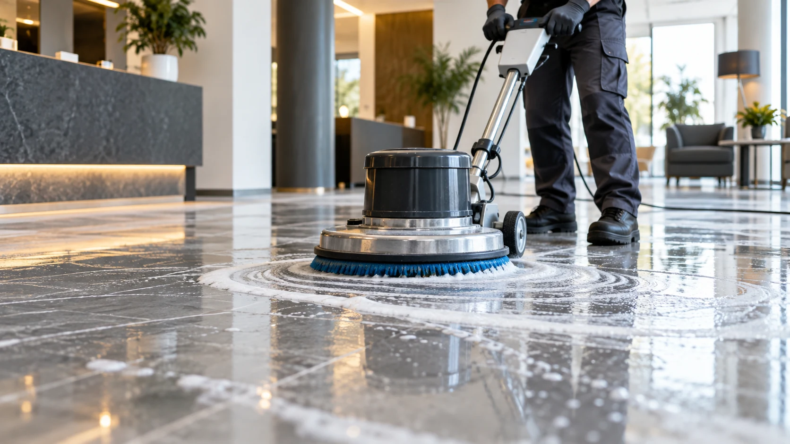
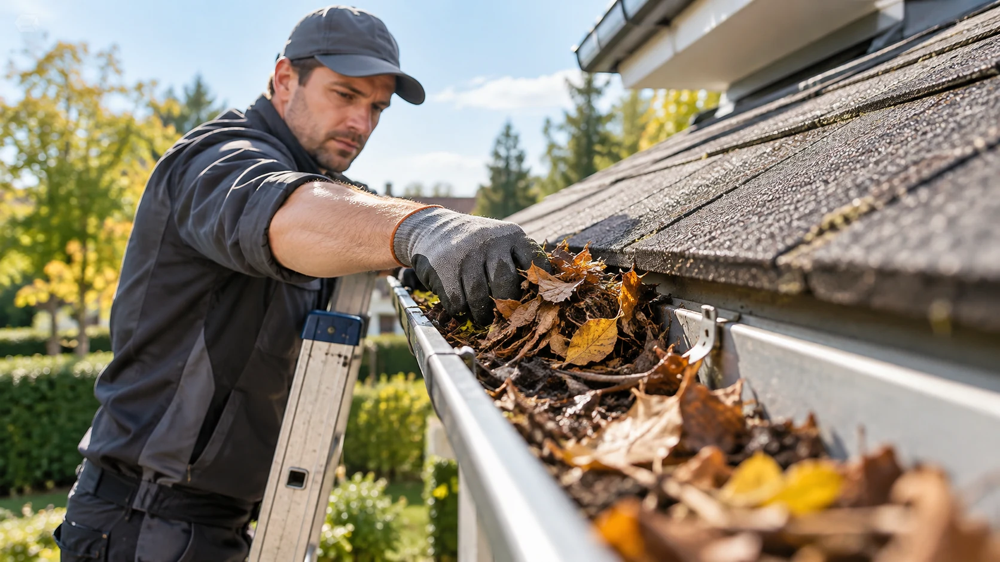

✦
Glas- & Fensterreinigung
Fenster, Schaufenster, Glasfassaden und Glasflächen in bester Sicht.
Mehr erfahrenUnsere Leistungen
Vom privaten Fenster bis zur laufenden Betreuung von Gewerbeobjekten: Entdecken Sie unser Angebot und wählen Sie die passende Leistung aus.
Fenster, Schaufenster, Glasfassaden und Glasflächen in bester Sicht.
Mehr erfahren
Gebäude
AußenPlatz schaffen in Wohnungen, Kellern und Gewerbeobjekten.
Mehr erfahrenBereit für saubere Ergebnisse?
Senden Sie uns Ihre Anfrage oder rufen Sie uns direkt an.